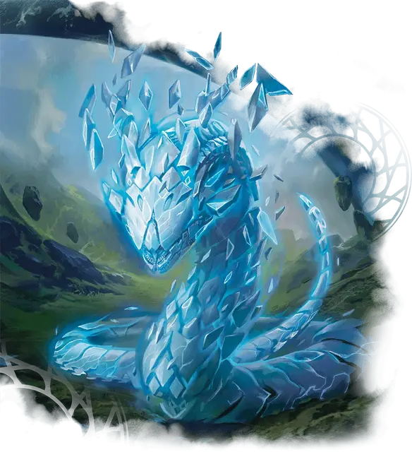

Талисман–фрактал
Fractal Mascot
Маленький Конструкт, нейтральный

Класс Доспеха 12
Хиты 27 (6к6 + 6)
Скорость 30 футов
| мод | спас | ||
|---|---|---|---|
| СИЛ | 12 | +1 | +1 |
| ЛОВ | 14 | +2 | +2 |
| ТЕЛ | 13 | +1 | +1 |
| мод | спас | ||
|---|---|---|---|
| ИНТ | 7 | −2 | −2 |
| МДР | 10 | +0 | +0 |
| ХАР | 5 | −3 | −3 |
Иммунитет к урону яд
Иммунитет к состояниям отравление
Чувства пассивное Восприятие 10
Опасность 1/4 (50 опыта)
Бонус мастерства +2
Особенности
Языки. Понимает языки своего создателя, но не говорит.
Относительная плотность. Фрактал может перемещаться сквозь других существ и предметы, как если бы они были труднопроходимой местностью. Он получает урон силовым полем 5 (1к10), если оканчивает ход внутри предмета.
Действия
Квантовый удар. Рукопашная атака оружием: +3 к попаданию. досягаемость 5 футов, одна цель. Попадание: 3 (1к4 + 1) урона силовым полем или 6 (2к4 + 1) урона силовым полем, если фрактал Средний или больше.
Бонусные действия
Увеличение. Размер фрактала увеличивается на одну категорию. В то время как фрактал Средний или больше, он с преимуществом совершает проверки и спасброски Силы. Фрактал не может стать больше, чем Огромный, с помощью этого бонусного действия.
Уменьшение. Размер фрактала уменьшается на одну категорию, если фрактал Крошечный, он с преимуществом совершает броски атаки, проверки и спасброски Ловкости. Фрактал не может стать меньше 1 фута в высоту с помощью этого бонусного действия.
Описание
Для неподготовленного глаза талисман-фрактал выглядит как существо, созданное из граней твердого света. Но арифманты знают, что на самом деле эти фракталы - живые уравнения: искусственные формы жизни, созданные путем экстраполяции магии из математических закономерностей в природе.
Благодаря своей арифметической основе талисманы-фракталы могут изменять как свой размер, так и плотность. Факультет Квандрикс выбрал фрактал в качестве своего талисмана, и многие студенты Квандрикса могут быть найдены играющими с фракталом-компаньоном в перерывах между занятиями.